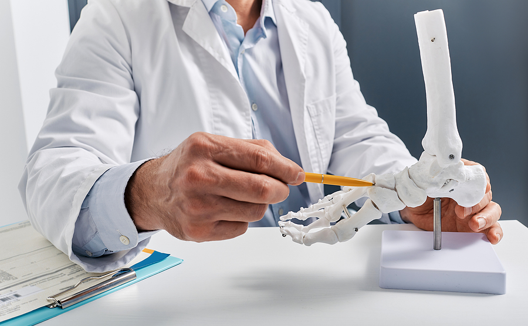

Rreth shërbimit të ortopedisë
Ortopedia merret me dëmtimet dhe sëmundjet e sistemit lokomotor. Në CarePoint ofrojmë diagnostikim të saktë dhe trajtim konservativ për një sërë problemesh ortopedike.
Shërbimet kryesore
- Vlerësim i frakturave dhe ndrydhjeve
- Trajtimi i dhimbjeve të shpinës dhe kyçeve
- Kontrolle pas traumave sportive
- Këshillim për rehabilitim dhe ushtrime
Për kë rekomandohet?
Pacientët me dhimbje kronike në shpinë, në gjunjë, shpatulla ose me dëmtime sportive duhet të konsultohen me ortoped për trajtim adekuat.
